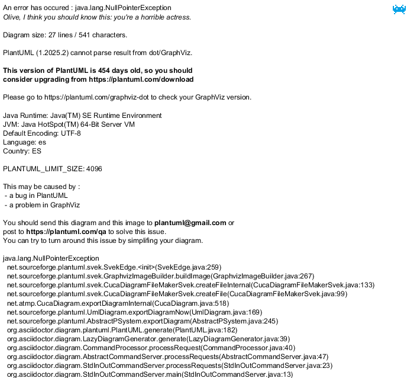
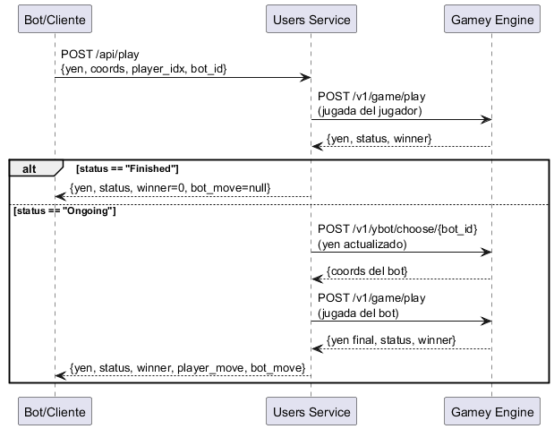
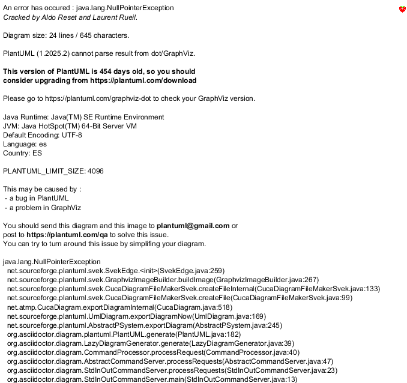
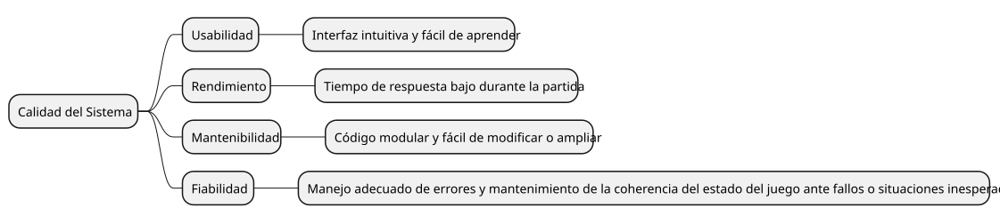

About arc42
arc42, the template for documentation of software and system architecture.
Template Version 8.2 EN. (based upon AsciiDoc version), January 2023
Created, maintained and © by Dr. Peter Hruschka, Dr. Gernot Starke and contributors. See https://arc42.org.
1. Introduction and Goals
El proyecto Yovi es una propuesta planteada por la empresa de desarrollo de videojuegos Micrati, cuyo objetivo es desarrollar una aplicación web para jugar al juego Y, permitiendo tanto la interacción de usuarios humanos como la integración de bots mediante una API externa.
1.1. Participantes
El equipo está formado por:
-
Pablo García Menéndez, UO299834
-
Elías Fernández Medina, UO299673
-
Sergio Espina Marcos, UO301107
-
Adrián Pérez Menéndez, UO201188
1.2. Requirements Overview
Los requisitos del proyecto Yovi son los siguientes:
-
Los usuarios podrán jugar partidas desde la web al juego Y, al menos a la versión clásica del juego y contra una máquina.
-
Los usuarios podrán elegir el tamaño del tablero, así como la estrategia que el bot rival empleará.
-
Los usuarios podrán registrarse en el sistema y consultar el histórico de su participación: número de juegos realizados, estadísticas de partidas ganadas/perdidas, etc.
-
La aplicación dispondrá de una API que permita a los bots interactuar con ella.
-
La API de la aplicación permitirá acceder y gestionar información de los usuarios y de las partidas.
-
La API tendrá documentación.
-
La API permitirá que un bot juegue contra la aplicación.
1.3. Quality Goals
| Objetivo de calidad | Descripción |
|---|---|
Usabilidad |
La aplicación web deberá ser sencilla de usar e intuitiva, permitiendo que cualquier usuario tenga una buena experiencia jugando al juego Y. |
Rapidez |
Se buscará que los tiempos de respuesta sean lo más cortos posibles, tanto durante la partida como en la navegación de la aplicación. |
Mantenibilidad |
La aplicación deberá ser fácil de mantener, con código limpio y fácil de modificar o ampliar, siguiendo buenas prácticas de diseño de software. |
Fiablilidad |
La aplicación tendrá que ser fiable y funcionar correctamente ante cualquier situación llevada a cabo por los usuarios. También deberá de estar disponible el mayor tiempo posible. |
1.4. Stakeholders
| Rol/Nombre | Contacto | Expectativas |
|---|---|---|
Micrati |
Empresa de desarrollo de videojuegos |
Espera una entrega de la aplicación que cumpla todos los requisitos especificados. |
Equipo de desarrollo |
Sergio Espina Marcos, Pablo García Menéndez, Elías Fernández Medina, Adrián Pérez Menéndez |
Espera desarrollar una aplicación web aplicando y mejorando sus conocimientos y habilidades. |
Usuarios |
Personas que utilicen la aplicación |
Esperan poder divertirse jugando al juego Y. |
Profesor |
Jose Emilio Labra Gayo |
Espera asistir al equipo de desarrollo en el proyecto y evaluarlo. |
2. Architecture Constraints
2.1. Technical Constraints
| Restricción | Descripción |
|---|---|
Lenguaje frontend |
La aplicación web debe desarrollarse utilizando TypeScript con React. |
Módulo de lógica |
El motor del juego debe implementarse en lenguaje introducido en seminarios Rust. |
Comunicación |
La comunicación entre el frontend y el módulo de lógica se realizará mediante servicios web usando JSON. |
Notación YEN |
Las partidas deberán representarse utilizando la notación YEN proporcionada. |
API externa |
El sistema debe exponer una API que permita la interacción con bots. |
Despliegue web |
La aplicación debe estar accesible a través de Internet (p.e VM de Azure). |
2.2. Organizational Constraints
| Restricción | Descripción |
|---|---|
Trabajo en equipo |
El desarrollo se realiza en equipo, lo cual implica coordinación y reparto de tareas equitativo. |
Evaluación académica |
El proyecto será evaluado según los criterios establecidos. |
Uso de GitHub |
El repositorio debe mantenerse actualizado con un historial claro de commits, issues, actas y decisiones que se puedan tomar. |
2.3. Conventions
| Convención | Descripción |
|---|---|
PLantilla arc42 |
Se seguirá la plantilla de arc42 para documentar la arquitectura. |
Buenas prácticas |
Se aplicarán principios de diseño limpio y mantenible. |
Control de versiones |
Se utilizará Git para el control de versiones. |
3. Context and Scope
3.1. Business Context
| Elemento | Entrada | Salida |
|---|---|---|
Usuario humano |
Accede a la aplicación, selecciona modo de juego, realiza movimientos, consulta historial |
Visualización del tablero, resultado de la partida, historial de partidas |
Jugador multijugador (sala) |
Crea o se une a una sala mediante código de 6 caracteres; envía movimientos y mensajes de chat |
Actualizaciones del tablero en tiempo real, mensajes de chat del oponente |
Bot externo (competición) |
Envía estado YEN + jugada + bot_id al endpoint |
Estado del tablero tras la jugada del bot oponente, resultado de la partida |
Sistema Yovi |
Recibe movimientos, peticiones de estado y mensajes de sala |
Gestiona partidas, usuarios, salas WebSocket y lógica del juego |
Módulo de lógica (Rust/Gamey) |
Estado del tablero en formato YEN + coordenadas de la jugada |
Nuevo estado YEN validado, status de la partida, jugada del bot |
Gateway (Spring Boot) |
Peticiones HTTP del frontend o bots externos |
Redirige al microservicio correspondiente (users o gamey) |
Nginx proxy |
Recibe peticiones HTTPS del frontend |
Transforma y envia las peticiones HTTPS en HTTP al backend |
Servidor WebSocket (ws-server) |
Mensajes de sala: create, join, board_update, game_over, chat |
Empareja jugadores, retransmite movimientos y chat entre oponentes |
El sistema Yovi actúa como intermediario entre los usuarios, los bots externos y el módulo de lógica del juego.
Los usuarios interactúan a través de la interfaz web mediante HTTP y WebSocket, mientras que los bots lo hacen mediante el endpoint REST /api/play.
3.2. Technical Context
| Elemento | Canal | Tecnología |
|---|---|---|
Usuario ↔ WebApp (SPA) |
Navegador web |
HTTP/HTTPS, React + TypeScript + Material UI |
WebApp ↔ Gateway (REST) |
Peticiones HTTP/HTTPS |
JSON, puerto 80 (Nginx proxy → gateway:8080) |
WebApp ↔ Servidor WebSocket |
Conexión WebSocket persistente |
ws:// o wss://, protocolo de salas propio, puerto 80 (Nginx proxy → ws-server:8081) |
Gateway ↔ Users Service |
Red interna Docker, HTTP |
JSON, puerto 3000 |
Gateway ↔ Gamey Engine |
Red interna Docker, HTTP |
JSON + notación YEN, puerto 4000 |
Users Service ↔ MySQL |
Red interna Docker, TCP |
SQL, puerto 3306 |
Bot externo ↔ Gateway |
Peticiones HTTP |
JSON, |
3.3. Mapping Input/Output to Channels
| Entrada/Salida | Canal |
|---|---|
Movimiento del usuario (vs bot) |
HTTPS → Nginx proxy → HTTP → Gateway → Gamey Engine ( |
Movimiento del usuario (multijugador) |
HTTPS → Nginx proxy → HTTP → Gateway → Gamey Engine + WebSocket broadcast al oponente |
Visualización del tablero |
Renderizado SVG en la SPA (estado recibido de Gamey) |
Petición de jugada del bot interno |
HTTP → Gateway → Gamey Engine ( |
Petición de partida bot-vs-bot |
HTTP → Gateway → Users Service → Gamey Engine ( |
Chat en sala multijugador |
WebSocket bidireccional (cliente ↔ ws-server ↔ oponente) |
Guardado de partida |
HTTPS → Nginx proxy → → Gateway → Users Service → MySQL |
Historial de partidas |
HTTPS → Nginx proxy → → Gateway → Users Service → MySQL |
Registro/login de usuario |
HTTPS → Nginx proxy → → Gateway → Users Service → MySQL |
4. Solution Strategy
El sistema Yovi se ha diseñado siguiendo principios de modularidad y separación de responsabilidades. La estrategia general se basa en los siguientes aspectos:
4.1. Top-Level Decomposition
-
Frontend web (TypeScript/React): Se encarga de la interacción con los usuarios y la presentación del tablero de juego.
-
API de la aplicación: Expone los servicios para bots y comunicación interna entre frontend y módulo de lógica.
-
Módulo de lógica del juego (Rust): Calcula el estado de la partida, determina movimientos y comprueba victorias.
-
Se comunica mediante JSON utilizando la notación YEN.
-
-
Persistencia de datos (MySQL): Registro de usuarios, partidas e historial en la base de datos gestionada por la aplicación web.
4.2. Technology Decisions
-
Se utiliza TypeScript con React para la web por su tipado estático y facilidad de mantenimiento.
-
Se utiliza Rust para la lógica del juego por su rendimiento y seguridad.
-
Se usa JSON + notación YEN para comunicar los módulos y con los bots.
-
La API está basada en servicios web simples (HTTP) para facilitar la integración con bots y otros sistemas externos.
-
Se emplea Git con GitHub para control de versiones y seguimiento del proyecto.
4.3. Key Quality Goals
-
Usabilidad: Se prioriza una interfaz clara e intuitiva para el usuario.
-
Rendimiento: Respuesta rápida durante la partida y consultas al API.
-
Mantenibilidad: Código poco acoplado, cohesivo, modular y limpio que permite añadir estrategias o variantes del juego sin romper el sistema.
4.4. Group Decisions
-
El proyecto se desarrolla de forma colaborativa por el equipo indicado, con coordinación mediante reuniones telemáticas y/o presenciales, contacto por WhatsApp y el uso del GitHub.
-
Se sigue una metodología ágil ligera de tipo SCRUM como la aprendida en asignaturas pasadas como IPS.
-
La documentación sigue la plantilla arc42, pues es la indicada por el profesor.
5. Building Block View
5.1. Whitebox Overall System
Diagrama de bloques del sistema completo

- Motivation
-
El sistema se descompone en microservicios independientes para separar la presentación, la gestión de usuarios/partidas, la lógica del juego y la comunicación en tiempo real. Nginx actúa como punto de entrada único en producción, eliminando la exposición de puertos internos al exterior y habilitando el proxy WebSocket.
- Contained Building Blocks
| Bloque | Responsabilidad |
|---|---|
WebApp |
SPA que proporciona la interfaz de usuario: selección de modo, tablero de juego, historial, multijugador. |
Nginx |
Servidor web y proxy inverso: sirve los estáticos de React, redirige HTTP al gateway y WebSocket al ws-server. Establece la comunicación del frontend en HTTPS. |
Gateway |
Punto de entrada HTTP único. Enruta peticiones REST al servicio correcto (users o gamey). |
Users Service |
API REST de usuarios y partidas. Gestiona registro, login, guardado de partidas y el endpoint |
Gamey Engine |
Motor de juego en Rust. Valida movimientos, comprueba victorias y ejecuta los algoritmos de bot. |
WS-Server |
Servidor WebSocket de salas multijugador. Empareja jugadores por código, retransmite movimientos y chat. |
MySQL |
Persistencia de usuarios, partidas y jugadores. |
- Important Interfaces
-
-
HTTPS/JSON entre WebApp y Gateway (puerto 80, Nginx proxy).
-
WebSocket
ws://<host>/wsentre WebApp y WS-Server (Nginx proxy). -
HTTP/JSON interno entre Gateway y Users Service (puerto 3000).
-
HTTP/JSON interno entre Gateway y Gamey Engine (puerto 4000).
-
HTTP/JSON interno entre Users Service y Gamey Engine (para
/api/play). -
SQL entre Users Service y MySQL (puerto 3306).
-
5.2. Level 2 — Bloques internos relevantes
5.2.1. White Box WebApp
La WebApp sigue la arquitectura SPA con componentes React organizados por funcionalidad.
| Componente | Responsabilidad |
|---|---|
|
Punto de entrada: gestión de autenticación y navegación entre vistas. |
|
Pantalla previa al juego: elige modo (bot/multijugador), tamaño de tablero, dificultad y quién empieza. |
|
Orquestador de modos: transición entre selector → bot game / mp-lobby → mp-game. |
|
Partida vs bot: alterna turno humano y turno bot llamando a la API Rust. Al terminar muestra botones "Jugar de nuevo" y "Volver al menú". |
|
Tablero SVG hexagonal (flat-top, pirámide centrada). Geometría exportada y compartida con |
|
Sala de espera: crear sala (obtiene código) o unirse con código. Chat en tiempo real. |
|
Partida multijugador: tablero + chat lateral. Movimientos vía API Rust + broadcast WebSocket. |
|
Historial de partidas con miniatura del tablero. Usa la misma geometría que |
|
Hook que encapsula todo el protocolo WebSocket: conexión, sala, mensajes, estado. |
|
Cliente HTTP para la API Rust: |
|
Perfil del usuario en donde puede ver sus estadísticas. |
|
Tabla con el ranking de los jugadores, actualmente los ordena por número de victorias. |
- Interaction
-
-
GameModeSelector→GameViewvia proponStart(config). -
Gamellama agameyClient.tspara cada movimiento (humano y bot). -
MultiplayerGamellama agameyClient.tspara validar el movimiento y luego usauseWebSocketRoom.broadcastMovepara notificar al oponente. -
useWebSocketRoommantiene la conexión WebSocket abierta durante toda la partida.
-
5.2.2. White Box Users Service
API REST basada en Express con acceso directo a MySQL y llamadas HTTP internas a Gamey.
| Endpoint | Responsabilidad |
|---|---|
|
Registro de usuario con contraseña hasheada (bcrypt). |
|
Autenticación, devuelve |
|
Lista todas las partidas con sus jugadores. |
|
Guarda una partida finalizada en MySQL. |
|
Inserta partidas de ejemplo. |
|
Endpoint de competición: aplica jugada del jugador + respuesta del bot en una sola llamada. Llama internamente a Gamey Engine 3 veces. |
5.2.3. White Box Gamey Engine
Proyecto en Rust con estructura modular expuesto como servidor HTTP con Axum.
| Módulo | Responsabilidad |
|---|---|
|
Reglas del juego, estado YEN, validación de movimientos, detección de victoria. |
|
Implementaciones de bots: |
|
Handler |
|
Handler |
5.2.4. White Box WS-Server
Servidor Node.js con la librería ws. No contiene lógica de juego.
| Función | Responsabilidad |
|---|---|
|
Crea sala con código único de 6 caracteres alfanuméricos. El creador espera. |
|
Une al segundo jugador. Asigna |
|
Retransmite |
|
Notifica al oponente si un jugador se desconecta. Limpia la sala. |
5.3. Level 3 — Geometría del tablero hexagonal
5.3.1. buildHexGeometry (HexBoard.tsx)
Función exportada que calcula las posiciones de todas las celdas del tablero triangular. Usa hexágonos flat-top (lados planos arriba/abajo) en forma de pirámide centrada:
colStep = √3 · r // separación horizontal
rowStep = 1.5 · r // separación vertical
offsetX(row) = (n - 1 - row) · colStep / 2 // centrado por fila
cx(row, col) = offsetX(row) + col · colStep
cy(row) = row · rowStepLa misma función es importada por GameHistory.tsx para garantizar que el miniboard del historial es geométricamente idéntico al tablero principal.
5.3.2. POST /api/play — Flujo interno

6. Runtime View
6.1. Registro del usuario
- Caso
-
El usuario accede a la página web e inicia el proceso de registro para poder jugar partidas.

6.2. Partida vs Bot
- Caso
-
El usuario selecciona el modo vs bot, configura tamaño, dificultad y quién empieza, y juega una partida completa.

6.3. Partida Multijugador (WebSocket)
- Caso
-
Dos jugadores crean y se unen a una sala, juegan una partida con chat en tiempo real.

6.4. Competición Bot vs Bot (POST /api/play)
- Caso
-
Un bot externo (o script de testing) quiere hacer una jugada y recibir la respuesta del bot de la aplicación en una sola llamada HTTP.

6.5. Fin de partida vs Bot — Experiencia del usuario
- Caso
-
La partida termina y el usuario decide si jugar de nuevo o ver el historial.
-
La partida se guarda en MySQL en background (el usuario no espera).
-
Se muestran simultáneamente dos botones:
-
"Jugar de nuevo": reinicia el tablero con la misma configuración sin volver al menú.
-
"Volver al menú": navega al
GameModeSelectorpara elegir nueva configuración.
-
-
El historial de partidas se refresca automáticamente cuando el usuario navega a esa vista.
-
7. Deployment View
7.1. Infrastructure Level 1

- Motivation
-
Todo el tráfico exterior entra por el puerto 80 (Nginx), que actúa como proxy inverso. Solo Nginx está expuesto al exterior; el resto de servicios se comunican por la red interna de Docker. Esto simplifica la configuración de firewall, evita problemas de CORS y habilita el proxy WebSocket.
- Puertos expuestos al exterior
| Puerto | Servicio | Descripción |
|---|---|---|
80 |
Nginx (webapp) |
SPA React + proxy HTTP y WebSocket |
9090 |
Prometheus |
Métricas (solo acceso interno/admin) |
9091 |
Grafana |
Dashboards de monitorización |
3306 |
MySQL |
Acceso directo a BD (solo desarrollo local) |
- Mapping Building Blocks → Infrastructure
| Bloque | Contenedor Docker |
|---|---|
WebApp (React + Nginx) |
|
Gateway |
|
Users Service |
|
Gamey Engine |
|
WS-Server |
|
MySQL |
|
7.2. Infrastructure Level 2 — Nginx como proxy

La configuración del proxy WebSocket en Nginx requiere los headers especiales:
location /ws {
proxy_pass http://ws-server:8081;
proxy_http_version 1.1;
proxy_set_header Upgrade $http_upgrade;
proxy_set_header Connection "Upgrade";
proxy_read_timeout 3600s;
}Sin estos headers, Nginx no haría el handshake HTTP→WebSocket y la conexión fallaría.
7.3. Infrastructure Level 2 — Variables de entorno por servicio
| Servicio | Variable | Valor en Docker |
|---|---|---|
gateway |
|
|
gateway |
|
|
users |
|
|
users |
|
|
users |
|
|
webapp (build) |
|
|
webapp (build) |
|
|
webapp (build) |
|
|
ws-server |
|
|
8. Cross-cutting Concepts
8.1. Modelo de Dominio
El sistema sigue un modelo de dominio centrado en la separación de responsabilidades:
-
Usuarios: gestión de cuentas, autenticación y autorización (Users Service).
-
Partidas: lógica de reglas, estado YEN, bots y validación de movimientos (Gamey Engine).
-
Salas multijugador: emparejamiento, sincronización en tiempo real y chat (WS-Server).
-
Interacción Web: comunicación entre frontend y backend mediante HTTP REST y WebSocket.
8.2. Notación YEN
El estado de todas las partidas se representa mediante la notación YEN (formato JSON):
{
"size": 5,
"turn": 0,
"players": ["B", "R"],
"layout": "./../.../..../....."
}-
layout: filas separadas por/, cada carácter es.(vacío),B(Azul) oR(Rojo). -
turn: índice del jugador cuyo turno es (0 o 1). -
players: identificadores de los jugadores en orden.
8.3. Comunicación en Tiempo Real — WebSocket de Salas
El módulo ws-server implementa un protocolo de salas propio sobre WebSocket puro.
Principio de diseño clave: el servidor WS no contiene lógica de juego.
Solo empareja jugadores y retransmite mensajes. La validación de movimientos siempre
la realiza la API Rust (/v1/game/play). Esto garantiza que la lógica del juego
sea la misma para todos los modos (bot y multijugador).
- Protocolo de mensajes
| Tipo | Dirección | Descripción |
|---|---|---|
|
Cliente → Servidor |
Crea sala nueva. Recibe |
|
Cliente → Servidor |
Se une a sala existente por |
|
Servidor → Cliente |
Confirmación de sala creada con |
|
Servidor → Ambos |
La sala está llena. Incluye |
|
Cliente → Servidor → Oponente |
Nuevo estado del tablero tras un movimiento. |
|
Cliente → Servidor → Oponente |
Partida terminada con el ganador. |
|
Cliente → Servidor → Oponente |
Mensaje de texto. El servidor añade el campo |
|
Servidor → Cliente |
Error de sala, conexión perdida o bot no encontrado. |
- Asignación aleatoria de color
-
Cuando el segundo jugador se une a la sala, el servidor asigna los índices (0=Azul, 1=Rojo) aleatoriamente mediante
Math.random() < 0.5. Esto garantiza equidad en partidas entre humanos.
8.4. Geometría del Tablero Hexagonal
El tablero usa hexágonos flat-top (lados planos arriba/abajo, vértices a izquierda y derecha) en forma de pirámide centrada: la fila 0 tiene 1 celda arriba y la fila n-1 tiene n celdas abajo.
La fórmula de centrado por fila:
offsetX(row) = (n - 1 - row) × (√3 · r) / 2
cx(row, col) = offsetX(row) + col × √3 · r
cy(row) = row × 1.5 · rLa función buildHexGeometry y flatHexPoints se exportan desde HexBoard.tsx y son
reutilizadas por GameHistory.tsx (miniaturas del historial), garantizando que ambas
representaciones son geométricamente idénticas.
8.5. API de Competición — POST /api/play
El endpoint /api/play implementa el patrón orquestación en el servidor: el cliente
envía una jugada y recibe el estado tras las dos jugadas (la suya y la del bot) en una
sola petición HTTP. Esto es ideal para partidas bot-vs-bot automatizadas.
Internamente se encadenan 3 llamadas a Gamey Engine:
-
POST /v1/game/play→ aplica la jugada del cliente. -
POST /v1/ybot/choose/{botId}→ el bot elige su respuesta. -
POST /v1/game/play→ aplica la jugada del bot.
Si el cliente gana en el paso 1, los pasos 2 y 3 se omiten y bot_move es null.
Bots disponibles: random_bot (aleatorio), greedy_bot (codicioso), minimax_bot (minimax profundidad 2).
8.6. Experiencia de Usuario al Finalizar Partida
Al terminar una partida vs bot, el tablero permanece visible con el resultado.
El guardado en la base de datos se realiza en background (sin await bloqueante),
de forma que la UI responde inmediatamente. El jugador ve dos botones:
-
"Jugar de nuevo": reinicia el tablero con la misma configuración (mismo tamaño, dificultad y quién empieza) sin volver al menú.
-
"Volver al menú": navega al
GameModeSelectorpara elegir nueva configuración o modo.
8.7. Experiencia de Usuario (UX)
-
La interfaz sigue el patrón SPA para ofrecer fluidez y rapidez.
-
Selección de modo de juego previa a la partida: modo (bot/multijugador), tamaño del tablero (mínimo 5, sin límite superior), dificultad del bot y elección de quién empieza.
-
En modo multijugador: pantalla de lobby con pestañas "Crear sala" / "Unirse a sala", con código de 6 caracteres y chat disponible antes y durante la partida.
-
Mensajes de error y estado consistentes en toda la aplicación.
8.8. Seguridad y Autenticación
-
Contraseñas hasheadas con bcrypt (salt rounds = 10) en Users Service.
-
Validación de datos de entrada en frontend y backend.
-
Nginx como punto de entrada único: los puertos internos no están expuestos al exterior.
-
El servidor WebSocket no requiere autenticación formal (partidas anónimas por código).
8.9. Patrones de Arquitectura y Diseño
-
Microservicios: cada servicio tiene una responsabilidad clara y se despliega en un contenedor Docker independiente.
-
Proxy inverso (Nginx): punto de entrada único para HTTP y WebSocket.
-
Gateway pattern: el gateway de Spring Boot enruta peticiones REST al servicio correcto.
-
Orquestación en servidor (
/api/play): el servidor compone múltiples llamadas internas y devuelve un resultado unificado al cliente. -
Hook de estado (
useWebSocketRoom): encapsula todo el ciclo de vida del WebSocket en un hook React reutilizable. -
Geometría compartida:
buildHexGeometryexportada para reutilización sin duplicar código.
8.10. Conceptos de Desarrollo
-
TypeScript estricto en el frontend con tipos compartidos entre componentes.
-
Tests unitarios con Vitest + Testing Library (frontend) y Vitest + Supertest (users service).
-
Tests E2E con Playwright + Cucumber. Las APIs externas se mockean con
page.route()ypage.addInitScript()(WebSocket falso inyectado en el navegador). -
Cobertura de código reportada a SonarCloud.
8.11. Conceptos Operativos
-
Docker Compose como orquestador en desarrollo y producción.
-
Variables de entorno para configurar URLs entre servicios sin hardcodear IPs.
-
Prometheus + Grafana para monitorización de métricas del Users Service.
-
Logs locales por servicio; integrables con sistemas centralizados en el futuro.
-
El timeout del proxy WebSocket en Nginx se configura a 3600s para mantener partidas largas.
9. Architecture Decisions
9.1. MySQL como BBDD del proyecto
- Estado
-
Aceptada.
- Contexto
-
Se requiere un sistema de persistencia para almacenar los datos de los usuarios, partidas y jugadores.
- Justificación
Modelo relacional |
MySQL permite estructurar los datos en tablas normalizadas (users, games, game_players), ideal para las relaciones entre entidades del juego. |
Integridad de datos |
Claves foráneas entre game_players y games/users garantizan consistencia. |
Madurez y soporte |
Tecnología estable, ampliamente documentada y compatible con Node.js (mysql2/promise). |
Adopción del equipo |
Tecnología conocida por todos los miembros del equipo. |
Facilidad de despliegue |
Compatible con Docker; imagen oficial mysql:8.0. |
- Consecuencias
-
-
Esquema relacional que requiere planificación previa de tablas y relaciones.
-
Cambios estructurales requieren migraciones. Se mitiga con
CREATE TABLE IF NOT EXISTSen el arranque.
-
9.2. Azure como infraestructura de despliegue
- Estado
-
Aceptada.
- Contexto
-
Se requiere un entorno cloud para desplegar la aplicación con acceso desde Internet.
- Justificación
Adopción del equipo |
Tecnología conocida por todos los miembros del equipo. |
IaaS con control total |
Máquina virtual Linux con Docker: control completo del entorno. |
Escalabilidad |
Posibilidad de ajustar recursos (CPU, RAM) según necesidad. |
Integración CI/CD |
Compatible con GitHub Actions para despliegue automático. |
9.3. Nginx como proxy inverso único (puerto 80)
- Estado
-
Aceptada.
- Contexto
-
La webapp está empaquetada como archivos estáticos (Vite build) que necesitan ser servidos. El frontend necesita comunicarse con el gateway (HTTP) y el servidor WebSocket (WS) sin exponer puertos internos al exterior.
- Alternativas consideradas
-
-
Exponer directamente los puertos de gateway (8080) y ws-server (8081) al cliente.
-
Usar un API Gateway externo (Kong, Traefik).
-
- Justificación
Punto de entrada único |
El cliente solo necesita conocer un host y puerto (80). Simplifica configuración y firewall. |
Proxy WebSocket |
Nginx maneja el handshake HTTP→WebSocket con los headers |
Sirve estáticos |
Nginx sirve el build de React directamente, sin necesidad de un servidor Node.js adicional en producción. |
CORS |
Al servir todo desde el mismo origen, se eliminan los problemas de CORS entre frontend y APIs. |
Sin coste adicional |
Nginx está incluido en la imagen |
- Consecuencias
-
-
Se añade un archivo
nginx.confque debe mantenerse actualizado si se añaden nuevas rutas. -
El
Dockerfilede la webapp usa una imagen multi-stage (Node para el build + Nginx para servir).
-
9.4. Servidor WebSocket independiente (ws-server)
- Estado
-
Aceptada.
- Contexto
-
El modo multijugador requiere comunicación bidireccional en tiempo real entre dos clientes. El gateway (Spring Boot con MVC bloqueante) no soporta WebSocket de forma nativa sin cambios importantes.
- Alternativas consideradas
-
-
Añadir WebSocket al gateway (requeriría migrar a WebFlux/reactive).
-
Añadir WebSocket al servicio de usuarios (mezcla responsabilidades).
-
Servidor WebSocket dedicado.
-
- Justificación
Separación de responsabilidades |
El servidor WS solo gestiona salas y retransmite mensajes; no contiene lógica de juego. |
Simplicidad |
La librería |
No modifica el gateway |
El gateway no necesita cambios; Nginx gestiona el routing al puerto 8081. |
Sin lógica de juego |
Los movimientos siempre pasan por la API Rust, garantizando validación centralizada. |
- Consecuencias
-
-
Nuevo contenedor Docker
ws-servera mantener y desplegar. -
Nginx debe configurarse con el bloque
location /wsy los headers de WebSocket. -
El servidor WS no persiste estado: si se reinicia, las partidas en curso se pierden (riesgo asumido).
-
9.5. Endpoint /api/play en Users Service
- Estado
-
Aceptada.
- Contexto
-
Se necesita un endpoint de alto nivel para competición bot-vs-bot que aplique una jugada del cliente y devuelva la respuesta del bot en una sola llamada.
- Alternativas consideradas
-
-
Implementarlo en el gateway (Java).
-
Crearlo como endpoint separado en un nuevo microservicio.
-
Documentarlo solo como secuencia de llamadas que el cliente debe hacer.
-
- Justificación
Centralización |
Users Service ya tiene acceso a la BD (para futura persistencia del resultado) y a Gamey Engine. |
Simplicidad |
Node.js con |
No rompe el gateway |
El gateway solo añade el proxy de |
Un solo roundtrip |
El cliente externo hace una llamada y recibe el estado completo; ideal para bots automáticos. |
- Consecuencias
-
-
Users Service realiza llamadas HTTP salientes a Gamey Engine (requiere
GAMEY_SERVICE_URL). -
Si Gamey Engine no está disponible, el endpoint devuelve 502.
-
10. Quality Requirements
10.1. Quality Tree

10.2. Quality Scenarios
| Atributo | Escenario | Comportamiento esperado |
|---|---|---|
Usabilidad |
Un usuario accede por primera vez a la aplicación, sin conocimiento de la misma ni del juego, y comienza una partida. |
El usuario entiende las reglas básicas y puede iniciar y jugar una partida sin necesidad de instrucciones externas. |
Rendimiento |
Un jugador realiza una acción durante la partida (por ejemplo, realizar un movimiento). |
El sistema procesa la acción y actualiza el estado del juego inmediatamente o en un muy corto periodo de tiempo. |
Mantenibilidad |
Un desarrollador necesita añadir una nueva funcionalidad o modificar una regla del juego. |
El cambio puede implementarse sin afectar a otras partes del sistema y sin introducir errores colaterales. |
Fiabilidad |
Durante una partida, el sistema enfrenta situaciones inesperadas (por ejemplo, entrada inválida, pérdida de conexión o error interno). |
El sistema maneja el error de forma controlada, no se bloquea ni pierde el progreso del usuario, mantiene la coherencia del estado del juego y permite continuar o recuperarse sin corrupción de datos. |
11. Risks and Technical Debts
| Risk / Technical Debt | Impact | Mitigation / Notes |
|---|---|---|
Complejidad de la integración Frontend ↔ Backend |
La comunicación JSON/YEN entre TypeScript/React y Rust puede generar errores de formato o inconsistencias. |
Definir y validar estrictamente el formato YEN, comprobar e integrar todos los endpoints. |
Evolución de las estrategias de juego |
Medio: Añadir nuevas estrategias puede romper el motor de juego si no se diseña modularmente. |
Diseñar motor de juego con interfaces claras; documentar cómo añadir nuevas estrategias. |
Gestión de concurrencia en partidas multiusuario |
Usuarios jugando simultáneamente pueden generar conflictos de estado e incoherencias. |
Implementar control de acceso a partidas; usar bloqueos o transacciones en la persistencia. |
Dependencia de bots externos |
Bots externos pueden enviar datos inválidos o malformateados. |
Validación estricta de entradas y manejo de errores; definir contratos claros en la API. |
Deuda técnica en el frontend |
Código TypeScript con React puede no ser modular o adquierir acoplamiento que dificulte el mantenimiento o futuros cambios. |
Revisiones de código, pruebas unitarias y refactorizaciones periódicas. |
Escalabilidad del backend |
El API y la lógica deben soportar múltiples partidas simultáneas. |
Planificar escalabilidad desde el inicio; monitorización y pruebas de carga. |
Compatibilidad con variantes futuras del juego |
Añadir variantes como Master Y o Holey Y puede requerir cambios en la lógica. |
Diseñar motor de juego flexible y documentar cómo extender reglas. |
12. Glossary
| Term | Definition |
|---|---|
Yovi |
Nombre del proyecto, plataforma web para jugar al juego Y y permitir la interacción de usuarios y bots. |
Juego Y (Hex) |
Juego de tablero abstracto en el que dos jugadores intentan conectar lados opuestos del tablero siguiendo reglas específicas. El tablero tiene forma de pirámide triangular. |
Notación YEN |
Formato JSON utilizado para representar el estado de una partida: tamaño, turno, jugadores y disposición del tablero como string de filas separadas por |
Bot |
Programa que juega automáticamente. Disponibles: |
API (Application Programming Interface) |
Conjunto de servicios web que permite la interacción de bots o módulos externos con la aplicación. |
Gateway |
Servicio Spring Boot que actúa como punto de entrada HTTP único. Enruta peticiones REST al servicio correcto (users o gamey). |
Nginx |
Servidor web y proxy inverso. En producción sirve la SPA React y redirige HTTP al gateway y WebSocket al ws-server, todo por el puerto 80. |
WebSocket |
Protocolo de comunicación bidireccional y persistente sobre HTTP. Usado para actualizar el tablero en tiempo real en el modo multijugador y para el chat de sala. |
WS-Server |
Microservicio Node.js que gestiona salas WebSocket: empareja jugadores por código, asigna colores aleatoriamente y retransmite movimientos y chat. |
Código de sala |
Identificador de 6 caracteres alfanuméricos generado al crear una sala multijugador. El segundo jugador lo introduce para unirse a la partida. |
playerIndex |
Índice asignado a cada jugador en una sala (0 = Azul, empieza primero; 1 = Rojo). Se asigna aleatoriamente en multijugador; el jugador elige en modo vs bot. |
Frontend (WebApp) |
Interfaz web implementada en TypeScript con React y Material UI. Incluye selector de modo de juego, tablero SVG, lobby multijugador con chat e historial de partidas. |
HexBoard |
Componente SVG del tablero hexagonal. Usa hexágonos flat-top en forma de pirámide centrada. Su función de geometría ( |
Flat-top hexagon |
Orientación hexagonal con lados planos arriba y abajo, vértices a izquierda y derecha. Es la orientación usada en el tablero de Yovi. |
Gamey Engine |
Motor de juego implementado en Rust + Axum. Valida movimientos ( |
|
Endpoint de alto nivel en Users Service para competición bot-vs-bot. Aplica la jugada del cliente y devuelve la respuesta del bot interno en una sola llamada HTTP. |
Users Service |
Microservicio Node.js + Express que gestiona usuarios (registro, login), partidas (guardar, listar) y el endpoint |
Persistencia (MySQL) |
Almacenamiento de usuarios, partidas y jugadores. Tres tablas: |
Docker Compose |
Herramienta de orquestación de contenedores. Levanta todos los microservicios (webapp, gateway, users, gamey, ws-server, mysql) con un solo comando. |
Partida |
Instancia de un juego Y entre dos jugadores (humanos o bots), con tablero y estado guardado en MySQL al finalizar. |
Historial |
Vista de la webapp que muestra todas las partidas guardadas con miniatura del tablero, jugadores, ganador y fecha. |